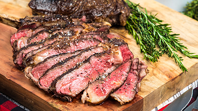

My Favorite Food
Steak
This is my recipe to make steak

Ingredients
- Ribeye steak
- Salt
- Pepper
- 1tbpsn Cooking oil
- 1/3tbspn Butter
Directions
- Heat pan on high or med/high fire
- While pan is heating, take out your steak
- Dab steak with napkin to remove any excess moisture
- Season steak with salt and pepper as desired on both sides
- By now pan should be heated, pour oil into pan
- Once oil is sizzling, place steak into pan
- Place butter into pan next to steak
- Sear each side of steak for 1 - 1 1/2 min, or until each side has golden brown crust
- As you cook the steak, baste the melted butter over the steak with a spoon
- Once steak is done cooking, transfer steak to cutting board, let it rest for 5 min
- Plate steak and enjoy!
For more info check out this site